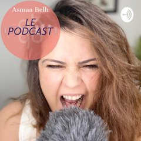

Le podcast
À écouter partout.
Esprit libre, experte en éveil et développement de soi, catalyseur de transmutation intra-personnelle : Asmaa Belh suscite beaucoup de tentatives de qualification sans qu'aucune ne réussisse à refléter la richesse et la complexité de cette thérapeute d'un nouveau genre.
Ultra connectée, débordante d'énergie et de projets innovants, elle a une ténacité infatigable, la bienveillance d'une louve et une joie de vivre d'une contagion rare.